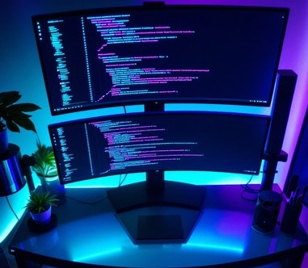

이승민 원주고등학교
안녕하세요. 원주고등학교 학생 이승민 입니다.
기본 정보
미래 직업
프로게이머 / 프로그래머
나의 비전
"열심히 살자"
내 꿈의 모델
Tyson ngo
조회하기 🔍클릭
나의 취미 & 성취
- 웹의 기초가 되는 HTML과 CSS 다루기
- 발로란트 광물 등급 탈출하기
현재 관심사
- 직접 화면을 구성하는 웹 프로그래밍
- 전략적 플레이가 재미있는 발로란트 게임
수업 후기
💡 이 수업을 듣게 된 계기
- 평소 프로그래밍 분야에 관심이 많이 있었기 때문에 기초부터 배워보고 싶어 참여했습니다.
🛠️ 내가 밟아온 학습 과정
- 웹 문서의 구조를 짜는 HTML
- 디자인을 입혀주는 CSS
- 프로그래밍의 기본기가 되는 Java
- 더 똑똑하게 개발할 수 있는 AI 적극 활용법
✨ 활동을 마무리하며 느낀 점
"수많은 프로그래밍 용어와 AI를 적극적으로 활용하는 방법을 처음 배우게 되어서 정말 재밌었습니다. 미래의 내 꿈을 위해 미리 무언가를 준비할 수 있었던 좋은 활동이었고, 나중에 또 이런 기회가 생긴다면 꼭 다시 참여하고 싶습니다."